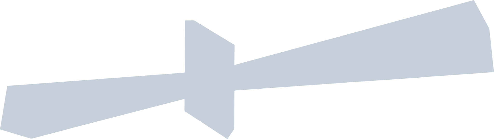

Prophecy: Artifacts of African Futures is an “archaeological future” system that employs digital spaces and artifacts to create, affirm, and project the identity of African peoples into the future. Prophecy archives and examines technological artifacts of future African cultures with the aim of reimagining notions of race, identity & culture in contemporary society as we navigate through time & space.
- 